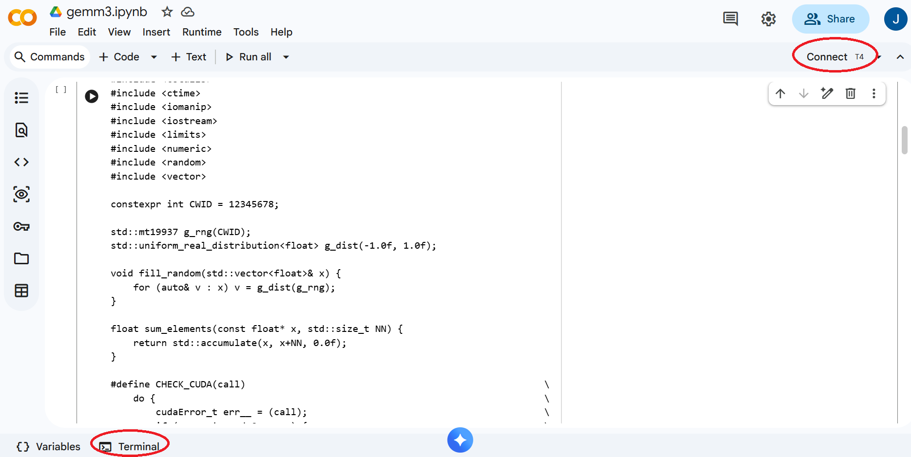
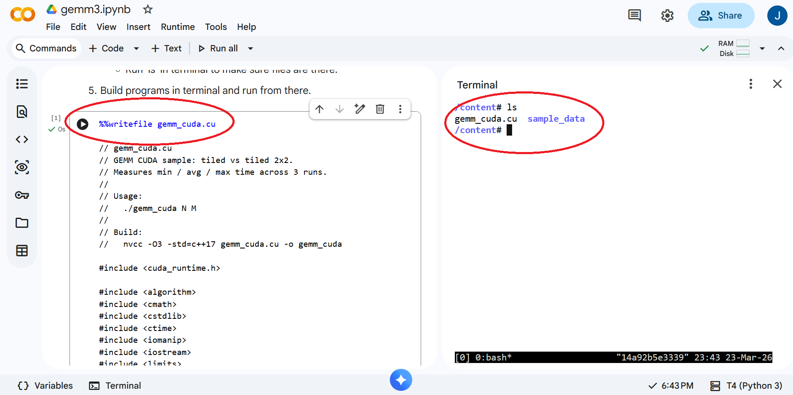

In Project 1 and 2, we established CPU baselines for General Matrix Multiplication (GEMM) and explored optimizations using loop ordering, OpenMP, and tiling. In this project, we move to CUDA and study how to increase data reuse inside a tiled GPU kernel.
Our CUDA sample code for this project is available here on Github gemm_cuda.cu. You may also use the Colab notebook here. Please use either version as you see fit.
First of all, similar to Project 1 and Project 2, please update the code to include your CWID. Without making any further change to the code, build and run the program as follows so that you can confirm CUDA works properly and your CWID appears in the output.
Google Colab provides a convenient way to develop and run CUDA code without acquiring CUDA hardware and installing CUDA software on your own computer. Please follow the steps below to setup your environment for this project.

/content# nvidia-smi ... | NVIDIA-SMI 580.82.07 Driver Version: 580.82.07 CUDA Version: 13.0 | ... /content# nvcc --version nvcc: NVIDIA (R) Cuda compiler driver Copyright (c) 2005-2025 NVIDIA Corporation Built on Fri_Feb_21_20:23:50_PST_2025 Cuda compilation tools, release 12.8, V12.8.93 Build cuda_12.8.r12.8/compiler.35583870_0

/content# nvcc -O2 gemm_cuda.cu -o gemm_cuda ... /content# ./gemm_cuda 8192 32 CWID A12345678 1774383772 N = 8192, M = 32, 256 MiB per matrix CWID A12345678 1774383779 gemm_tiled : min 1635.271 ms, avg 1710.232 ms, max 1856.612 ms CWID A12345678 1774383779 gemm_tiled_2x2 : min 1.222 ms, avg 1.224 ms, max 1.225 ms CWID A12345678 1774383779 sums: min -264050.719, max 0.000, failedDon't worry about the compiler warnings and the last line showing 'failed'. Your goal of this project is to make it pass as discussed in the next section.
Please review Lecture 19 and the associated notebook ece587-lec19-lec20.ipynb. The key idea is to study the tiled CUDA kernel carefully and then implement the '2x2' optimization in 'gemm_tiled_2x2' as indicated by the 'TODO' comments in the code provided.
Here are a few hints for the implementation.
Run the program with matrix sizes of 4096, 8192, 16384, and tile sizes of 8, 16, 32, 64. Collect data from the output. Feel free to structure your code and experiments as you see fit, e.g. to introduce loops in 'main()' to automate runs for different N and M values, but make sure to validate your results and collect data as needed.
Submit a project report in .doc/.docs or .pdf format to Canvas before the deadline for a total of 15 points. Your project report should include the following.